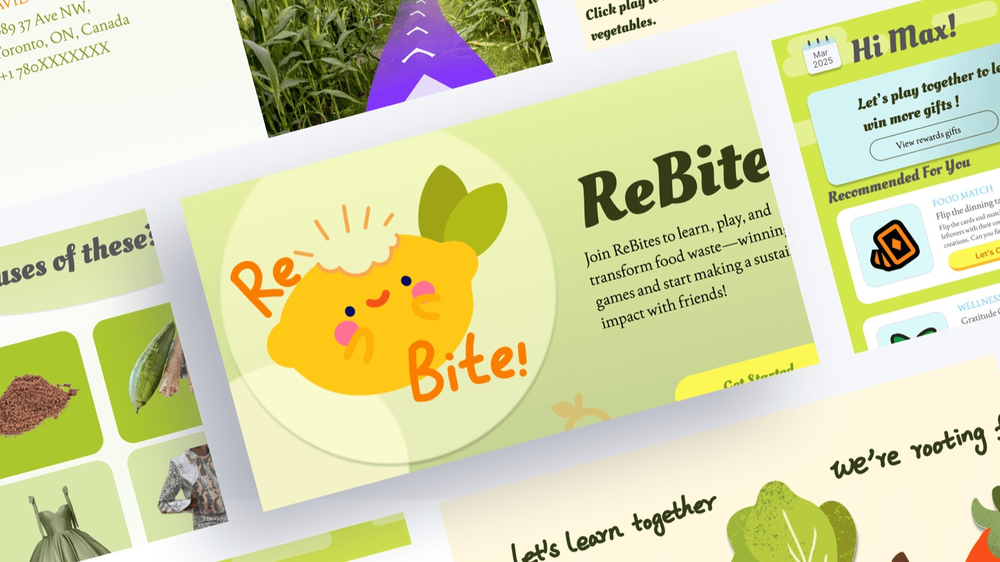

Game Research — Super Smash Bros. Ultimate
Making a complex game menu easier to navigate through user research and information architecture.

Making a complex game menu easier to navigate through user research and information architecture.
This was a solo project. Super Smash Bros. Ultimate is a dense, menu-heavy fighting game, so I ran an open card-sorting study with 10 participants to understand how players group its content. The results revealed a mismatch between the game’s existing information categories and players’ mental models. I used those findings to guide a new information architecture and design a new home page menu.
Based on my own play experience and the heuristic list, I focused on UI1: whether text, icons, and visual indicators are legible, visible, and convey relevant information. The main menu’s largest central graphic is not clickable, and the “Smash” label does not clearly explain which modes it contains. After entering, I was placed into CPU battles even though I wanted to play with others; online play sits under a separate “Online” section that also contains a mode called “Smash.” “Vault” and “Games & More” were similarly opaque, and newer systems like Spirits relied on knowledge first-time players may not have.
I ran an open card sort in UXtweak with 10 participants who had some Smash experience but were not experts. The study used 20 cards focused on the main menu, and each card included the in-game description to match the real experience. Participants grouped items in whatever way made sense and created their own category labels.
I compared the card-sorting results with a recreated original sitemap, using darker colors for frequently used category names and highlighting cards that more than half of participants grouped together.
 04
04Rebuilt the U of T Master of Information site to remove invisible cognitive friction and screen-reader confusion — beyond AODA/WCAG compliance.
View case study →
06A dual student / teacher platform for everyday food choices — 1st place, Seneca Hackathon 2025.
View case study →